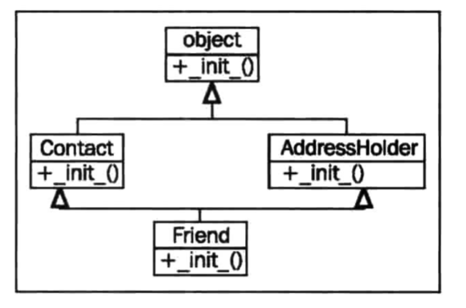

Python3 面向对象编程笔记
第3章 对象相似时
在编程的世界中，重复的代码被认为是邪恶的。这一章主要学习继承。既将共有的逻辑抽象到超类并在子类中控制具体的细节。这一章主要学习：
- 基本的基础
- 从内置类型基础
- 多重基础
- 多态与鸭子类型
基本的基础
严格来说，在Python中，我们都是用到了基础。所有的Python类都可以看做是继承了object类的子类
我们声明一个类时可以显示的声明基础的类是什么，如果隐藏了父类，那么默认就是继承的object类
class MyTest:
pass
class MyTest2(object):
pass这两种其实都是一样的。
在实践中使用继承关系，最简单的就是为已经存在的类添加功能，先写一个实例
class Contact:
# * 类变量
all_contacts = []
def __init__(self, name, email):
self.name = name
self.email = email
Contact.all_contacts.append(self)
test1 = Contact("name1", "name@qq.com")
test2 = Contact("name2", "name2@qq.com")
print(test2.all_contacts[0])
# [ < __main__.Contact object at 0x103b3afd0 > , < __main__.Contact object at 0x103b42048 > ]在上面的代码中有个概念类变量，代码中的all_contacts就是类变量，他可以被该类的所有实例共享。在子类中可以通过self.all_contacts获取该类变量，如果在这一对象中找不到该变量名，将会从类中找到。如果你用了self.all_contacts设定了这一变量。实际上只是设定了该对象的这以变量，并不会影响类变量，还是可以通过Contacts.all_contacts访问到
上面的例子是一个联系人的类，其中有名字和邮箱。我们需要从这些联系人中下订单，需要新加一个类
class Contact:
# * 类变量
all_contacts = []
def __init__(self, name, email):
self.name = name
self.email = email
Contact.all_contacts.append(self)
class Supplier(Contact):
# 这里会自动调用父类的__init__方法
def order(self, order):
print(
f"If this were a real system we would send {order} to {self.name}")
c = Contact("Some Body", "somebody@example.net")
s = Supplier("sup Plier", "supplier@example.net")
print(c.all_contacts)
# [<__main__.Contact object at 0x1073f9f60>, <__main__.Supplier object at 0x1073f9fd0>]
# c.order("I need pliers") 会报错
s.order("I need pliers")
# If this were a real system we would send I need pliers to sup Plier这里Supplier能够做Contact能做的所有事（加入all_contacts），而且还有自己的方法。
扩展内置对象
继承关系中有一种有趣的应用就是为内置类型添加新的功能，比如前面的例子中保存了联系人，如果想查找联系人就可以添加一个新的类
class ContactList(list):
def search(self, name):
matching_contacts = []
for contact in self:
if name in contact.name:
matching_contacts.append(contact)
return matching_contacts
class Contact:
# * 类变量
all_contacts = ContactList()
def __init__(self, name, email):
self.name = name
self.email = email
Contact.all_contacts.append(self)
class Supplier(Contact):
# 这里会自动调用父类的__init__方法
def order(self, order):
print(
f"If this were a real system we would send {order} to {self.name}")
c = Contact("Some Body", "somebody@example.net")
s = Supplier("sup Plier", "supplier@example.net")
s2 = Supplier("sup Body", "supplier2@example.net")
print([contact.name for contact in Contact.all_contacts.search("Body")])
# ['Some Body', 'sup Body']大多数的内置对象都可以通过这种方式进行扩展。通常会扩展的内置类型有：object、list、set、dict、file、str
比如扩展dict类型
class TestDict(dict):
def longest_key(self):
longest = None
for key in self:
if not longest or len(longest) < len(key):
longest = key
return longest
longest_keys = TestDict()
longest_keys["hello"] = 1
longest_keys["hello world"] = 1
longest_keys["xx"] = 1
print(longest_keys.longest_key())
# hello world重写和super
继承关系很适合向已经存在的类中添加新的行为，如果需要修改某些行为，就要重写父类的某些方法。当一个子类重写了父类的一个方法，在调用该方法时会调用子类的方法。而不是父类的方法
class Contact:
# * 类变量
all_contacts = []
def __init__(self, name, email):
self.name = name
self.email = email
Contact.all_contacts.append(self)
class Friend(Contact):
def __init__(self, name, email, phone):
self.name = name
self.email = email
self.phone = phone在上面的例子中，我们重写了__init__方法。但是会有重复的代码，而且我们还必须手动加入Contact.all_contacts中。
任何方法都可以被重写
我们真正需要做的是执行Contact类上的__init__方法。
class Contact:
# * 类变量
all_contacts = []
def __init__(self, name, email):
self.name = name
self.email = email
Contact.all_contacts.append(self)
class Friend(Contact):
def __init__(self, name, email, phone):
super().__init__(name, email)
self.phone = phone我们调用了super()函数获取父类对象的实例，然后调用他的__init__方法
可以在任何方法内调用
super()获取父类对象实例
多重继承
多重继承：继承自多个父类的子类可以获取所有父类的功能。
多重继承最简单的形式被称为混入（mixin），关于混入可以参考http://30daydo.com/article/480。其中利用混入实现多重继承比较重要的就是：
- 首先它表示一个功能，而不是一个对象或者物品
- 必须职责单一，如果有多个功能，就要写多个minin类
- 不依赖于子类的实现
- 即使子类没有继承该类，也可以正常运行。只不过没有该方法
比如在联系人当中，我们要给某个人发邮件，发邮件这个功能可以利用混入的方式实现多重继承
class Contact:
# * 类变量
all_contacts = []
def __init__(self, name, email):
self.name = name
self.email = email
Contact.all_contacts.append(self)
class MailSender:
def send_mail(self):
print(f"send email to {self.email}")
class EmailableContact(Contact, MailSender):
pass
e = EmailableContact("test", "test@example.com")
print(e.all_contacts)
# [<__main__.EmailableContact object at 0x109cdde48>]
e.send_mail()
# send email to test@example.com多重继承在混合不同类的方法时不会有问题，但是当调用父类的方法时就会变得很混乱
为了讨论更复杂的情况，我们在Friend类中加入家庭住址。应该更好的方法是利用组合的方式，创建一个Address类，在Friend中的地址指向Address类的实例。但是在这里采用继承的方式。
class AddressHolder:
def __init__(self, street, city, state, code):
self.street = street
self.city = city
self.state = state
self.code = code钻石型继承问题
首先可以用多重继承的方式为已有的Friend类添加父类，但是现在有了两个父类，需要初始化两个父类。先从一个简单的方法开始
class Contact:
# * 类变量
all_contacts = []
def __init__(self, name, email):
self.name = name
self.email = email
Contact.all_contacts.append(self)
class AddressHolder:
def __init__(self, street, city, state, code):
self.street = street
self.city = city
self.state = state
self.code = code
class Friend(Contact, AddressHolder):
def __init__(self, name, email, phone, street, city, state, code):
Contact.__init__(name, email)
AddressHolder.__init__(street, city, state, code)
self.phone = phone上面的例子是可以正常运行的，但是会有两个问题
- 如果忘记了初始化父类，就会出现问题
- 可能会导致超类被多次调用
下面是整个初始化的流程：
从图中可以看出分别在初始化Contact和AddressHolder时都初始化了object，既object被初始化了两次。
为了更加清楚的阐述这个问题，让我们看另外一个虚构的例子。
class BaseClass:
num_base_call = 0
def call_me(self):
print("Calling method on Base Class")
self.num_base_call += 1
class LeftSubclass(BaseClass):
num_left_call = 0
def call_me(self):
BaseClass.call_me(self)
print("Calling method on Left Subclass")
self.num_left_call += 1
class RightSubclass(BaseClass):
num_right_call = 0
def call_me(self):
BaseClass.call_me(self)
print("Calling method on Right Subclass")
self.num_right_call += 1
class Subclass(LeftSubclass, RightSubclass):
num_sub_call = 0
def call_me(self):
LeftSubclass.call_me(self)
RightSubclass.call_me(self)
print("Calling method on Subclass")
self.num_sub_call += 1
s = Subclass()
s.call_me()
# Calling method on Base Class
# Calling method on Left Subclass
# Calling method on Base Class
# Calling method on Right Subclass
# Calling method on Subclass
print(f"num_sub_call: {s.num_sub_call}\nnum_left_call: {s.num_left_call}\n\
num_right_call: {s.num_right_call}\nnum_base_call: {s.num_base_call}\n")
# num_sub_call: 1
# num_left_call: 1
# num_right_call: 1
# num_base_call: 2下面是整个流程图：

整个调用流程看起来像是钻石，因此也叫做钻石继承问题
从输出可以看到BaseClass的call_me方法被调用了两次。关于多重继承需要记住，我们只想调用类层级中的“下一个”方法，而不是“父类”方法。实际上下一个方法可能不属于该类的父类或者更早的祖先。super关键字再次拯救了我们
修改后的代码：
class BaseClass:
num_base_call = 0
def call_me(self):
print("Calling method on Base Class")
self.num_base_call += 1
class LeftSubclass(BaseClass):
num_left_call = 0
def call_me(self):
super().call_me()
print("Calling method on Left Subclass")
self.num_left_call += 1
class RightSubclass(BaseClass):
num_right_call = 0
def call_me(self):
super().call_me()
print("Calling method on Right Subclass")
self.num_right_call += 1
class Subclass(LeftSubclass, RightSubclass):
num_sub_call = 0
def call_me(self):
super().call_me()
print("Calling method on Subclass")
self.num_sub_call += 1
s = Subclass()
s.call_me()
# Calling method on Base Class
# Calling method on Right Subclass
# Calling method on Left Subclass
# Calling method on Subclass
print(f"num_sub_call: {s.num_sub_call}\nnum_left_call: {s.num_left_call}\n\
num_right_call: {s.num_right_call}\nnum_base_call: {s.num_base_call}\n")
# num_sub_call: 1
# num_left_call: 1
# num_right_call: 1
# num_base_call: 1从输出结果可以看到BaseClass的call_me方法只被调用了一次。
从流程中看到，Subclass的call_me方法调用super().calll_me()，指向了LeftSubclass.call_me()，然后LeftSubclass.call_me()调用了super().call_me()，但是这里super()指向的是RightSubclass.call_me()，而不是他父类BaseClass.call_me()。然后RightSubclass在调用BaseClass
特别注意的就是LeftSubclass中的super()指向的并不是他的父类，这样就实现了调用下一个方法而不是父类的方法。通过使用super可以确保类层级中的每一个方法都被调用一次
从上面的例子可以看到super的两个作用：
- 调用父类方法，通常用来初始化父类
- 解决钻石继承问题，防止祖先类方法被调用多次
不同集合的参数
之前遇到继承的例子里，父类都是不需要参数初始化的。如果在多重继承下有这样的场景，每个父类都需要不同的参数初始化，那该怎样做呢？可惜的是，解决这个问题的唯一办法就是从头开始计划，我们不得不将基类的参数列表设计成接受任意关键字参数，而且这些参数对于所有子类的实现都是可选的。最后，我们必须确保能够接受不需要的参数并将其传递给自己的super方法，以防他们在后续继承顺序的方法中会用到
修改后的代码如下：
class Contact:
all_contacts = []
def __init__(self, name="", email="", **kwargs):
super().__init__(**kwargs)
self.name = name
self.email = email
class AddressHolder:
def __init__(self, street="", city="", state="", code="", **kwargs):
super().__init__(**kwargs)
self.street = street
self.city = city
self.state = state
self.code = code
class Friend(Contact, AddressHolder):
def __init__(self, phone="", **kwargs):
super().__init__(**kwargs)
self.phone = phone这样就能够初始化不同参数的父类了
但是，如果子类和父类都需要同一个参数呢？比如Friend和Contact都需要phone参数呢？总共有下面几种方法：
- 不要将phone作为关键字参数，而是放在
**kwargs中，需要改参数的可以通过kwargs['phone']获取 - 将phone作为关键字参数，在Friend类中再将phone加入到
kwargs中，kwargs['phone']=value - 将phone作为关键字参数，在Friend类中再将phone加入到
kwargs中，使用update方法，该方法适用于更新多个字段到kwargs中 - 将phone作为关键字参数，在Friend类中
super(phone=phone,**kwargs)这种方式传递给父类
建议：在实际中尽量多用组合的方式，少用多重继承
多态
多态：由于所用子类不同而产生不同的行为，而不需要明确知道用的是哪个子类。
在很多情况下，多态是使用继承关系最重要的一个原因之一
举个例子：
class Animal(object):
def run(self):
print('Animal is running...')
class Dog(Animal):
def run(self):
print('Dog is running...')
class Cat(Animal):
def run(self):
print('Cat is running...')
def run_twice(animal):
animal.run()
run_twice(Animal())
# Animal is running...
run_twice(Dog())
# Dog is running...
run_twice(Cat())
# Cat is running...run_twice函数只管调用传递进来的run方法，而不关心具体是Animal的哪个子类，因为所有的子类都会有run方法，最基本的就是Animal的run方法。可以随便为Animal增加子类，但是run_twice不用改动。这就是多态真正的威力：调用方只管调用，不管细节
在静态语言中，run_twice的参数必须是Animal或者他的子类，但是在python中有鸭子类型，既：一个对象如果“看起来像是鸭子，走路像鸭子”，那么他就是鸭子。所以run_twice可以接受不是Animal子类的类，只要他有run方法即可。例如：
class Animal(object):
def run(self):
print('Animal is running...')
class Dog(Animal):
def run(self):
print('Dog is running...')
class Cat(Animal):
def run(self):
print('Cat is running...')
class Test:
def run(self):
print("Test is running...")
def run_twice(animal):
animal.run()
run_twice(Animal())
# Animal is running...
run_twice(Dog())
# Dog is running...
run_twice(Cat())
# Cat is running...
run_twice(Test())
# Test is running...run_twice(Test())也是可以正常调用的。
鸭子类型主要的一个作用：不需要提供所需对象的完整接口，而只需满足实际被访问的接口。
可能在有些场景下，会调用一些官方库的方法，但他对参数是有要求的，比如必须实现某个方法等。利用鸭子类型，我们就可以只实现参数要求的那个方法，而不必实现参数对象所有的方法才去调用这个官方库方法。
抽象基类
虽然鸭子类型很有用，但是要想事先知道这个类是否满足全部的需要并不是一件容易的事。因此，Python引入了抽象基类的概念，抽象基类（Abstract base class），或者是ABCs，定义一组必须被类的鸭子实例实现的方法和属性
使用抽象基类
先来看一个例子：
In [1]: from rich import print
In [2]: from collections import Container
In [3]: help(Container)
In [4]: print(Container.__abstractmethods__)
frozenset({'__contains__'})Container类只需要实现一个抽象方法__contains__。
List,str和dict都实现了这个方法，用以表明给的值是否存在于这一数据结构中，我们自定义一个类：
from collections import Container
class OddContainer:
def __contains__(self, x):
if not isinstance(x, int) or not x % 2:
return False
return True
class TestContainer:
pass
print(isinstance(OddContainer(), Container))
# True
print(issubclass(OddContainer, Container))
# True
print(isinstance(TestContainer(), Container))
# Flase
print(issubclass(TestContainer, Container))
# False由于Container类规定了鸭子类型实例必须要实现__contains__方法，所以OddContainer可以被认为是Container的子类，而TestContainer不可以
这就是鸭子类型币传统的多态更棒的原因，我们可以不用继承关系（或者更坏的情况）就能创建一个“是一个”的关系。
有趣的是Container的子类都可以使用in关键字。实际上in只是__contains__的语法糖。
创建抽象基类
Container类其实就是一个抽象基类，下面自己创建一个抽象基类
import abc
class MediaLoader(metaclass=abc.ABCMeta):
# * 子类必须实现该方法
@abc.abstractclassmethod
def play(self):
pass
# * 子类必须提供这一属性
@abc.abstractproperty
def ext(self):
pass
# * 该方法可用类直接调用，而不必用到实例
@classmethod
def __subclasshook__(cls, C):
print("MediaLoader __subclasshook")
if cls is MediaLoader:
attrs = set(dir(C))
if set(cls.__abstractmethods__) <= attrs:
return True
return False
class Wav(MediaLoader):
pass
class Ogg(MediaLoader):
ext = ".ogg"
def play(self):
pass
class TestABCs:
ext = ".testABCs"
def play(self):
pass
# x = Wav()
# Traceback(most recent call last):
# File "test.py", line 26, in < module >
# x = Wav()
# TypeError: Can't instantiate abstract class Wav with abstract methods ext, play
o = Ogg()
print(o.ext)
# .ogg
print(isinstance(Ogg(), MediaLoader))
# MediaLoader __subclasshook
# True
print(isinstance(TestABCs(), MediaLoader))
# MediaLoader __subclasshook
# True
print(issubclass(Ogg, MediaLoader))
# True
print(issubclass(TestABCs, MediaLoader))
# True如果继承了抽象基类，但是不实现规定的方法和属性，则会报错
案例学习
下面将简单实现一个房屋租赁系统
继承关系：

def get_valid_input(input_string, valid_options):
input_string = f"{input_string} {', '.join(valid_options)}\n"
response = input(input_string)
while response not in valid_options:
response = input(input_string)
return response
# 房屋和公寓的父类，提供一些共有的参数
class Property:
def __init__(self, square_feet="", beds="", baths="", **kwargs):
# 防止它不是在继承链的最后一层调用
super().__init__(**kwargs)
self.square_feet = square_feet
self.num_bedrooms = beds
self.num_baths = baths
def display(self):
print("PROPERTY DETAILS")
print("=" * 10)
print(f"square footage: {self.square_feet}")
print(f"bedrooms: {self.num_bedrooms}")
print(f"bathrooms: {self.num_bedrooms}")
print()
# * 静态方法，可直接通过类调用，也可以通过实例调用
# * 静态方法与实例无关，所以没有self参数，同样不能使用super关键字
@staticmethod
def prompt_init():
return dict(
square_feet=input("Enter the square feet: "),
beds=input("Enter number of bedrooms: "),
baths=input("Enter number of baths: ")
)
# 公寓
class Apartment(Property):
# 洗衣机
valid_laundries = ("coin", "ensuite", "none")
# 阳台
valid_balconies = ("yes", "no", "solarium")
def __init__(self, balcony="", laundry="", **kwargs):
super().__init__(**kwargs)
self.balcony = balcony
self.laundry = laundry
def display(self):
super().display()
print("APARTMENT DETAILS")
print(f"laundry: {self.laundry}")
print(f"has balcony: {self.balcony}")
@staticmethod
def prompt_init():
parent_init = Property.prompt_init()
laundry = get_valid_input(
"What laundry facilities does the property have? ", Apartment.valid_laundries)
balcony = get_valid_input(
"Does the property have a balcony? ", Apartment.valid_balconies)
parent_init.update({
"laundry": laundry,
"balcony": balcony
})
return parent_init
# 房屋
class House(Property):
# 车库
valid_garage = ("attached", "detached", "none")
# 围栏
valid_fenced = ("yes", "no")
def __init__(self, num_stories="", garage="", fenced="", **kwargs):
super().__init__(**kwargs)
self.garage = garage
self.fenced = fenced
self.num_stories = num_stories
def display(self):
super().display()
print("HOUSE DETAILS")
print(f"# of stories: {self.num_stories}")
print(f"garage: {self.garage}")
print(f"fenced yard: {self.fenced}")
@staticmethod
def prompt_init():
parent_init = Property.prompt_init()
fenced = get_valid_input(
"Is the yard fenced? ", House.valid_fenced)
garage = get_valid_input(
"Is there a garage? ", House.valid_garage)
num_stories = input("How many stories? ")
parent_init.update({
"fenced": fenced,
"garage": garage,
"num_stories": num_stories
})
return parent_init
# 购买
class Purchase:
def __init__(self, price="", taxes="", **kwargs):
super().__init__(**kwargs)
self.price = price
self.taxes = taxes
def display(self):
super().display()
print("PURCHASE DETAILS")
print(f"selling price: {self.price}")
print(f"estimated taxes: {self.taxes}")
@staticmethod
def prompt_init():
return dict(
price=input("What is the selling price? "),
taxes=input("What are the estimated taxes? ")
)
# 租房
class Rental:
def __init__(self, furnished="", utilities="", rent="", **kwargs):
super().__init__(**kwargs)
self.furnished = furnished
self.utilities = utilities
self.rent = rent
def display(self):
super().display()
print("RENTAL DETAILS")
print(f"rent: {self.rent}")
print(f"estimated utilities: {self.utilities}")
print(f"furnished: {self.furnished}")
@staticmethod
def prompt_init():
return dict(
rent=input("What is the monthly rent? "),
utilities=input("What are the estimated utilities? "),
furnished=get_valid_input(
"Is the property furnished? ", ("yes", "no"))
)
# 租房子
class HouseRental(Rental, House):
@staticmethod
def prompt_init():
init = House.prompt_init()
init.update(Rental.prompt_init())
return init
init = HouseRental.prompt_init()
house = HouseRental(**init)
house.display()
'''
Enter the square feet: 1
Enter number of bedrooms: 2
Enter number of baths: 3
Is the yard fenced? yes, no
yes
Is there a garage? attached, detached, none
attached
How many stories? 3
What is the monthly rent? 12
What are the estimated utilities? 100
Is the property furnished? yes, no
yes
PROPERTY DETAILS
==========
square footage: 1
bedrooms: 2
bathrooms: 2
HOUSE DETAILS
# of stories: 3
garage: attached
fenced yard: yes
RENTAL DETAILS
rent: 12
estimated utilities: 100
furnished: yes
'''注意：在前面的例子中如果我们将HouseRental继承顺序改为
(House, Rental)，将不会触发Rental.display()方法。因为当调用House.display方式时，会调用Property.display方法。但是Property.display()中没有调用super，所以调用不了Rental.display方法。如果在Property中调用super().display()方法则不行，因为object对象没有display方法。可行的方式是Rental也继承Property，就成了之前讲到的钻石继承问题了。super()能轻松的解决。
继续编写剩余代码：
# 租公寓
class ApartmentRental(Rental, Apartment):
@staticmethod
def prompt_init():
init = Apartment.prompt_init()
init.update(Rental.prompt_init())
return init
# 买公寓
class ApartmentPurchase(Purchase, Apartment):
@staticmethod
def prompt_init():
init = Purchase.prompt_init()
init.update(Rental.prompt_init())
return init
# 买房子
class HousePurchase(Purchase, House):
@staticmethod
def prompt_init():
init = House.prompt_init()
init.update(Purchase.prompt_init())
return init
class Agent:
type_map = {
("house", "rental"): HouseRental,
("house", "purchase"): HousePurchase,
("apartment", "rental"): ApartmentRental,
("apartment", "purchase"): ApartmentPurchase
}
def __init__(self):
self.property_list = []
def display_properties(self):
for property in self.property_list:
property.display()
def add_property(self):
property_type = get_valid_input(
"What type of property? ", (("house", "apartment"))).lower()
payment_type = get_valid_input(
"What payment type? ", ("purchase", "rental")).lower()
PropertyClass = self.type_map[(property_type, payment_type)]
init_args = PropertyClass.prompt_init()
self.property_list.append(PropertyClass(**init_args))
agent = Agent()
agent.add_property()
agent.add_property()
agent.display_properties()
# What type of property? house, apartment
# house
# What payment type? purchase, rental
# purchase
# Enter the square feet: 1
# Enter number of bedrooms: 2
# Enter number of baths: 3
# Is the yard fenced? yes, no
# yes
# Is there a garage? attached, detached, none
# none
# How many stories? 4
# What is the selling price? 12
# What are the estimated taxes? 23
# What type of property? house, apartment
# house
# What payment type? purchase, rental
# rental
# Enter the square feet: 2
# Enter number of bedrooms: 3
# Enter number of baths: 4
# Is the yard fenced? yes, no
# no
# Is there a garage? attached, detached, none
# none
# How many stories? 6
# What is the monthly rent? 12
# What are the estimated utilities? 4
# Is the property furnished? yes, no
# no
# PROPERTY DETAILS
# == == == == ==
# square footage: 1
# bedrooms: 2
# bathrooms: 2
# HOUSE DETAILS
# # of stories: 4
# garage: none
# fenced yard: yes
# PURCHASE DETAILS
# selling price: 12
# estimated taxes: 23
# PROPERTY DETAILS
# == == == == ==
# square footage: 2
# bedrooms: 3
# bathrooms: 3
# HOUSE DETAILS
# # of stories: 6
# garage: none
# fenced yard: no
# RENTAL DETAILS
# rent: 12
# estimated utilities: 4
# furnished: no